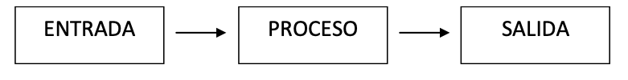
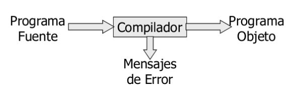
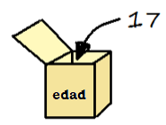

| Fecha | Versión | Descripción |
|---|---|---|
| 10/09/2021 | 1.0.0 | Versión inicial. |
| 17/09/2021 | 1.0.1 | Corrección en la declaración de variables. |
| 20/09/2021 | 1.0.2 | Corrección del índice. |
Unidad 1 - Introducción a la programación
Unidad 1 - Introducción a la programación1 Programa1.1 Programador y Usuario1.2 Algoritmo vs Programa vs Aplicación Informática1.3 Programa vs procesador1.4 Ciclo de vida del software1.5 Interprete vs Compilador1.6 Java: 50% Compilado - 50% Interpretado1.7 Corrección de programas1.8 ¿Qué lenguaje elegir?2 La Información2.1 ¿Qué es la información?2.2 Datos2.2.1 Variables2.2.2 Precisión de las variables2.2.3 Constantes2.3 Nombres2.4 Tipos de datos2.4.1 Datos simples y compuestos2.4.2 Abstracción de datos3 Instrucciones y Operadores3.1 Expresiones3.2 Operadores3.2.1 Operadores aritméticos3.2.2 Operadores relacionales3.2.3 Operadores lógicos3.3 Funciones3.3.1 Funciones predefinidas3.3.2 Funciones definidas por el usuario
1 Programa
1.1 Programador y Usuario
Un/a programador/a es aquella persona que se encarga de codificar programas
Usuario/a es el término que se utiliza para referirse a la persona que utiliza una aplicación informática con la intención de conseguir un resultado final.
1.2 Algoritmo vs Programa vs Aplicación Informática
Un algoritmo es un método de resolución de un problema en un número finito de pasos. Ejemplo: ¿cómo hacer una tortilla francesa?
Un programa es la expresión de un algoritmo en un lenguaje comprensible para el ordenador. La programación es la secuencia de pasos que debe efectuar el / la programador / a para obtener un programa.
Una aplicación informática es un conjunto de programas enlazados de manera conveniente.
1.3 Programa vs procesador
Llamamos procesador toda entidad capaz de ejecutar un algoritmo. En última instancia será la CPU del ordenador, móvil o TV.
Un programa constará de:
Instrucciones: una instrucción es una combinación de palabras, datos y símbolos que, obedeciendo la sintaxis propia del lenguaje, son utilizados por el ordenador para llevar a cabo una acción determinada.
Datos: llamamos dato toda información que utiliza el ordenador.

Las características deben cumplir:

Las tecnologías de programación presente hoy en día son las siguientes:
Programación estructurada: Usar únicamente secuencias, instrucciones condicionales e instrucciones repetitivas en la confección de sus programas.
Programación modular: El programa se diseña por partes (módulos).
Programación orientada a objetos: Paradigma de programación que usa "objetos" (estructuras con atributos y métodos) y sus interacciones para diseñar programas. Se verá en la tercera evaluación.
Otros:
Programación concurrente: Útil cuando tenemos que realizar varias acciones a la vez. Se ve a segundo curso.
Otro programaciones: Programación funcional, Programación lógica
1.4 Ciclo de vida del software
El ciclo de vida del software (proceso de creación y explotación de un programa) es como se describe:
Este modelo admite la posibilidad de hacer iteraciones, es decir, durante las modificaciones que se hacen en el mantenimiento se pueden ver, por ejemplo, la necesidad de cambiar algo en el diseño, lo cual significa que se harán los cambios necesarios en la codificación y se tendrán que realizar de nuevo las pruebas, es decir, si se tiene que volver a una de las etapas anteriores al mantenimiento hay que recorrer de nuevo el resto de las etapas.
Después de cada etapa se realiza una revisión para comprobar si se puede pasar a la siguiente.
Trabaja en base a documentos, es decir, la entrada y la salida de cada fase es un tipo de documento específico. Idealmente, cada fase podría hacerla un equipo diferente gracias a la documentación generada entre las fases. Los documentos son:
Análisis: Toma como entrada una descripción en lenguaje natural de lo que quiere el cliente. Produce el S.R.D. (Software Requirements Document).
Diseño: Su entrada es el S.R.D. Produce el S.D.D. (Software Design Document). A partir del diseño se obtiene lo que denominamos Algoritmo, que básicamente es una secuencia de pasos que se han de realizar para resolver un determinado problema.
Codificación: A partir del S.D.D. produce módulos mediante la reescritura del algoritmo con un lenguaje especial, de forma que pueda entenderlo el ordenador. En esta fase se hacen también pruebas de unidad.
Pruebas: A partir de los módulos probados se realiza la integración y pruebas de todo el sistema. El resultado de las pruebas es el producto final listo para entregar.
El programa fuente o código fuente es el resultado de la codificación de un algoritmo en un lenguaje de alto nivel. Esto se hace en texto plano, siguiendo la sintaxis del lenguaje elegido.
Un entorno de programación interpretado traduce el código fuente a código máquina y lo ejecuta, instrucción por instrucción.
1.5 Interprete vs Compilador
Intérprete:
Analiza una línea y lo ejecuta
No genera un programa
Más lento, ya que verifica la línea una a una
Necesita un elemento intermedio:
Intérprete: Python, PHP
Máquina virtual: Java

Compilador:
Traducir todo el código fuente a código objeto
Genera un programa ejecutable
Más rápido
Dificultad en la detección de errores
Al corregir un error se debe recompilar

1.6 Java: 50% Compilado - 50% Interpretado
El lenguaje Java para poder ejecutarse se hace en dos fases:
Una compilación del código fuente, donde el código generado no es código máquina, sino un lenguaje especial llamado bytecodes, que sólo puede interpretarse por una JVM (Máquina Virtual de Java)
La JVM coge los bytecodes y los interpreta, ejecutando ya el programa sobre la máquina real

Esto permite la total portabilidad de los programas Java y su ejecución en cualesquiera plataforma.

1.7 Corrección de programas
Para corregir un programa se debe testear o probar. Un juego de pruebas es un conjunto de situaciones que permite probar el buen funcionamiento del programa. Este conjunto debe abarcar todas las posibilidades reales.
Un depurador (debugger) es un programa que permite:
ejecutar un programa instrucción por instrucción y ver qué pasa después de la ejecución de cada una
obtener el valor de los datos antes y después de ejecutar una instrucción
modificar el valor de los datos durante la ejecución
interrumpir o detener la ejecución del programa en cualquier punto
A la hora de programar tendremos que diferenciar entre errores:
sintáctica: errores que se producen durante la creación del programa, porque no cumplimos en las normas del lenguaje
De ejecución: errores que no podemos detectar durante el desarrollo, y se producen sólo cuando se ejecuta.
1.8 ¿Qué lenguaje elegir?
Aquí puede encontrar un listado de los lenguajes más utilizados en el mundo ranking de lenguajes de programación.
Enguany estudiarem Java:
C: Lenguaje de bajo y medio nivel. Nos permite acceder a la memoria e interactuar directamente con el sistema operativo de los equipos. Es el lenguaje escogido por todos los desarrolladores de sistemas operativos, desde un disco duro multimedia, un móvil, el ordenador de un coche, etc. Es uno de los lenguajes que genera el código más rápido (de ejecución)
Java: Lenguaje de alto nivel. Es uno de los lenguajes más extendidos, debido a que es multiplataforma y permite ejecutar un mismo código en cualquier equipo, independientemente de la arquitectura del mismo (32 vs 64 bits, Win Lin, Mac) e incluso navegadores (Applets). Precursor de javascript y Node.js.
Python: Lenguaje de alto nivel que permite crear desde aplicaciones de alto nivel, scripts de sistemas operativos. Predispone a la creación de un código legible, lo que lo hace muy útil para enseñar a programar.
2 La Información
2.1 ¿Qué es la información?
Un programa es una secuencia de instrucciones que manipulan unos datos para obtener unos resultados. Esas instrucciones son órdenes que le damos en el ordenador. Para ello hay que decirle esto en el lenguaje que entiende, que es el lenguaje máquina, compuesto por secuencias de 0s y 1s, al igual que toda la información que se guarda en un ordenador (números, texto, fotos, música, juegos , películas ...).
Pero como para nosotros (los humanos) nos resulta muy difícil, se lo diremos en otro lenguaje, más cercano al nuestro, que es un lenguaje de programación. A todo esto, hay que saber que los datos son información, y tal y como dice la wikipedia:
"La información es un conjunto organizado de datos procesados, que constituyen un mensaje que cambia el estado de conocimiento del sujeto o sistema que recibe dicho mensaje."
A tener en cuenta:
Los datos deben estar organizados
El mensaje (los datos) deben cambiar el estado del conocimiento. Esto significa que deben aportar algo nuevo o relevante al programa o proceso. De manera inversa: "Si un dato no aporta conocimiento, es que no es necesario, es inútil"
2.2 Datos
Un dato es cualquier información con la que trabaja un algoritmo.
Cada dato es de un tipo determinado que, básicamente, será entero, real, carácter o lógico, pero que dependerá del lenguaje de programación en el que estamos trabajando.
Los datos aparecen en un programa en una de las siguientes formas:
Variables
Constantes (simbólicas y literales)
2.2.1 Variables
Una variable es un lugar donde podemos guardar un dato.

El dibujo anterior representa la variable edad que guarda el valor 17.
Cada variable se caracteriza por tener:
un nombre (edad) y un tipo (entero) que deben ser especificados cuando se define la variable en un programa, con una instrucción declarativa.
un valor (17) que se le asignará en alguna instrucción de asignación (o bien en la misma instrucción declarativa) y que podrá ser cambiado por otro valor las veces que haga falta.
Las variables se almacenan en la memoria RAM, de forma que:
El nombre (edad) representa la dirección de la RAM donde está el valor
El tipo (entero) especifica la cantidad de bytes necesarios para guardar un valor (4).
El valor es el contenido (17).

Hay que tener en cuenta que las variables ocupan memoria, y que se puede saber en qué lugar está cada variable por su dirección de memoria.
xxxxxxxxxx// instrucción declarativa
int edad; // Definimos una variable, de nombre edad y de tipo entero
// instrucciones de asignación
edad = 17; // Damos valor 17 a la variable edadlee (edad); // Asignamos por teclado un valor a edad. Por ej. 19edad = edad + 3; // Volvemos a cambiar el valor. Ahora valdrá 22edad = 23.5; // Error. ¿Por qué?
// utilización de la variableescribe (edad);2.2.2 Precisión de las variables
A la hora de declarar variables hay que tener en cuenta que datos se van a almacenar en ellas, sobre todo en datos numéricos. Por ejemplo en 1 byte pueden guardarse valores entero 0 y 255 ($ 2 ^ 8 = 256 $ valores posibles). Con 1 byte es más que suficiente para guardar un dato como por ejemplo la edad de una persona. Pero 1 byte no nos serviría para guardar el año de nacimiento, y para la fecha de nacimiento ya ni comentamos.
Otro problema es que con ese byte, ¿como representamos números negativos? La solución que tienen los lenguajes de programación, es de los 256, partir la mitad negativos y la mitad positivos, quedándose [-127..0..128]. A los números reales, también pasa lo mismo, ¿cuán grande es el número que vamos a representar?
La solución que dan los lenguajes de programación es permitir reservar varios tamaños a los números, ya veremos, desde 1 byte hasta 12. Esta flexibilidad tiene la desventaja de que muchas veces estaremos desperdiciando memoria innecesaria.
2.2.3 Constantes
Una constante es como una variable pero que el valor no cambia durante la ejecución del programa.
Las constantes pueden aparecer en forma de literales o bien con nombre (constantes simbólicas):

Es necesario resaltar que:
Las constantes simbólicas, al igual que las variables, tienen un valor concreto que se le da al principio del programa pero, como ya hemos dicho, no pueden cambiar de valor.
Las constantes de carácter (una letra) se expresan entre comillas simples.
Las constantes literales alfanuméricos deben expresarse cerradas entre comillas dobles.
2.3 Nombres
Las variables y constantes, para referenciarlas con posterioridad, necesitan un nombre (edad, x, altura, fecha_nacimim, etc.). Dependiendo del lenguaje de programación que estamos, habrá unas normas generales para escoger los nombres, que se deben cumplir:
Pueden contener letras, números y símbolos, a excepción de los símbolos que ya tienen un uso general, como son operadores, comas y puntos.
Deben empezar por letra o el símbolo '_' (guión bajo).
No pueden contener espacios en blanco.
No pueden coincidir con palabras reservadas del lenguaje. El propio lenguaje de programación tiene palabras suyas (
while,class,int, etc.).Las constantes con mayúsculas (convenio, es para que cualesquiera programador que lee el código, sepa que es una constante).
2.4 Tipos de datos
Como ya hemos comentado, una variable debe tener un tipo, y una primera clasificación sencilla de los tipos simples es la de la figura lateral.
Después, cuando estudiamos ya los lenguajes, veremos que para cada tipo podemos añadir modificadores para la precisión.

2.4.1 Datos simples y compuestos
Una clasificación muy interesante de los datos (sobre todo de las variables) es saber si estas son simples o compuestas. De todo ello se trabajará más adelante:
Simples: Son aquellas que sólo guardan 1 información, es decir un número, un valor, un estado. Por ejemplo Edad, Piso, Puerta, Blog, Día
Compuestas: Son aquellas que para guardar su valor, necesitan de varios datos simples. Los datos compuestas se forman a partir de datos simples, haciendo una composición. Por ejemplo: Fecha Nacimiento, Dirección,
Consideración: Los textos, dependiendo del lenguaje de programación pueden considerarse datos simples o compuestas (palabra como agrupación de letras)
Ejemplo de complejidad y de información compuesta: captura con la herramienta imtool de MATLAB, donde podemos observar un plano de nxm píxeles o puntos de luz. Cada píxel está formado por una terna (tripleta), con unos valores RGB (colores primarios).


Fijar con el detalle bajo de todo Pixel info:
El píxel de la celda
(772-202)tiene los valores RGB[77, 148, 210].Si hacemos un rápido recuento, una imagen de 600x400, en color real necesitará 600x400x3 = 720.000 bytes ~ 703 KB en memoria
2.4.2 Abstracción de datos
El proceso de abstraer datos, es muy simple: "quedarnos en lo que nos interesa".
Un "ente" tiene muchos datos que lo describen. Por ejemplo una persona tiene: nombre, apellido, edad, fecha nacimiento, color de ojos, grupo sanguíneo, deporte preferido, hobbies, actor preferido, etc.
Ahora cuando hacemos un programa, dependiendo para que sea, nos interesará una información u otra:
Facebook: Nombre, Edad, aficiones, lugar de trabajo, etc.
Hacienda: Nombre, DNI, dirección, nómina, propiedades, etc.
3 Instrucciones y Operadores
3.1 Expresiones
Las constantes y variables no aparecen aisladas, sino formando parte de expresiones. Una expresión es un cálculo necesario para obtener un resultado, y es una combinación de operandos unidos mediante operadores.
Los operandos pueden ser de diferentes tipos:
Constantes:
PIVariables:
edatFunciones:
raíz (100),longitud (nombre)Literales:
100,"IES Camp de Morvedre"
Ejemplos de expresiones:
| Tipos | Expresiones |
|---|---|
| Numéricas | edad |
5 | |
2*PI*quadrado(radio) | |
(-b+raiz(quadradp(b)-4*a*c)/(2*a) | |
| Alfanuméricas | "Pedro" |
"Daenerys" + "De la tormenta" | |
| Lógicas | True |
False | |
a<b | |
(v1<v2) && (v2<v3) |
3.2 Operadores
Son los símbolos de las operaciones con los que se construyen las expresiones.
Dependiendo del tipo de datos de los operandos o del tipo del resultado, tenemos unos tipos de operadores: aritméticos, lógicos, relacionales y alfanuméricos
3.2.1 Operadores aritméticos
Son las operaciones matemáticos. Las variables o constantes que intervienen deben ser numéricas (enteros o reales) y el resultado también. Los más usuales son:
| Operador | Significado |
|---|---|
^ ò ** | Potencia |
* | Producto |
/ ò // | División |
% | Residuo |
+ | Suma |
- | Resta |
Las expresiones que tienen 2 o más operandos necesitan unas reglas que permiten determinar en qué orden se evalúan. Si escribimos 2 * 5-3, ¿el resultado es7 o 4?
Para ello están las reglas de prioridad, que son estas:
| Operador | Prioridad |
|---|---|
^ | mas alta |
*, /, % | |
+,- | mas baja |
3.2.2 Operadores relacionales
Sirven para comparar 2 expresiones, retornan un valor lógico: verdadero o falso.
| Operador | Significado |
|---|---|
> | mayor |
< | menor |
== | igual |
!= | distinto |
>= | mayor o igual |
<= | menor o igual |
Por ejemplo, suponemos las siguientes variables: x = 10, y = 20:
| Expresión | Valor |
|---|---|
(x+y)<20 | false |
(y-x)<=x | true |
(x+y)>=x | true |
x==y | false |
x!=y | true |
3.2.3 Operadores lógicos
Los operadores lógicos son NO,Y y O. Pero para seguir la nomenclatura estándar de los algoritmos utilizaremos los nombres ingleses: NOT,AND y OR.
Actúan sobre operandos o expresiones lógicas y devuelven un valor lógico.
Los resultados de cada operador vienen dados por las correspondientes tablas de verdad:
| x | y | not x | x or y | x and y | x ox y |
|---|---|---|---|---|---|
| F | F | V | F | F | F |
| F | V | V | V | F | V |
| V | F | F | V | F | V |
| V | V | F | V | V | F |
Leyes de De Morgan
Son 3 leyes básicas que cumplen las expresiones relacionales y que nos pueden servir para expresar de diferentes formas lo que queremos:
xxxxxxxxxx1a) NOT (NOT A) = A2a) NOT (A AND B) = (NOT A) OR (NOT B)3a) NOT (A OR B) = (NOT A) AND (NOT B)
Negación de los operadores relacionales
Los operadores relacionales pueden negarse también para obtener, a veces, expresiones más sencillas o de acuerdo a nuestras necesidades. La siguiente tabla muestra dichas negaciones:
| OPERADOR | Negación |
|---|---|
| < | >= |
| > | <= |
| == | != |
| != | == |
| <= | > |
| >= | < |
Cambios de prioridad
Como los operadores lógicos y relacionales pueden formar expresiones junto con los aritméticos, también necesitamos unas reglas de prioridad para saber qué operadores evalúan primero.
| OPERADOR | PRIORIDAD |
|---|---|
| NOT | Alta |
| ^ | |
| *, /, % | |
| +, - | |
| <, >, <=, >= | |
| ==, != | |
| AND | |
| OR | |
| = | Baja |
3.3 Funciones
Son bloques de código que podemos utilizar en nuestros programas. Hay 2 tipos.
3.3.1 Funciones predefinidas
Los lenguajes de programación tienen funciones predefinidas con las que podemos llevar a cabo las tareas más usuales. Las funciones (al igual que en las de las matemáticas) suelen recibir uno o más argumentos y devuelven un valor que llamamos resultado.
Por ejemplo, para mostrar cosas por pantalla tenemos:
printf("Hola");// en lenguaje CSystem.out.println("Hola");// en lenguaje programación Javaprint("Hola")// en Pythonescribe("Hola")// los algoritmos
Pensamos en la dificultad que nos sería ahora que empezamos a programar el hecho de pintar algo en pantalla. Escribir Hola, a efectos prácticos es iluminar una serie de píxeles en pantalla, a unas determinadas coordenadas, en un determinado color, etc .. Gracias a cosas comoprint esto es mucho más fácil.
3.3.2 Funciones definidas por el usuario
Los lenguajes de programación también nos permiten definir nuestras funciones para poderlas utilizar en diferentes partes del programa:
En Java:
xxxxxxxxxxfloat area_triangulo(float base , float altura){ float area; area = base * altura / 2 return area;}
{ print("El área del triángulo de base 2 y altura 4 es:"); area = area_triangulo(2,4); escribe( area ); escribe("El área del triángulo de base 3 y altura 6 es:"); area = area_triangulo(3,6); escribe( area );}En Python:
xdef area(base, altura): area = base * altura / 2 return area;
print("El area es: ",area(7.6,4,5))